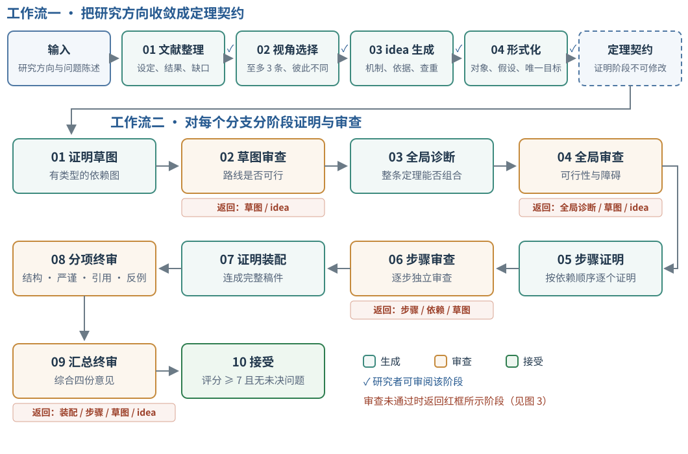
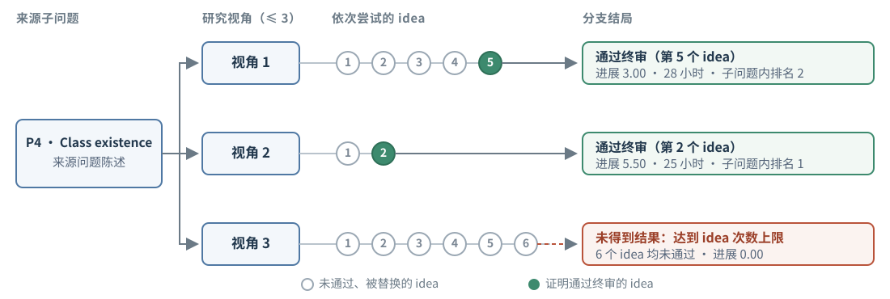
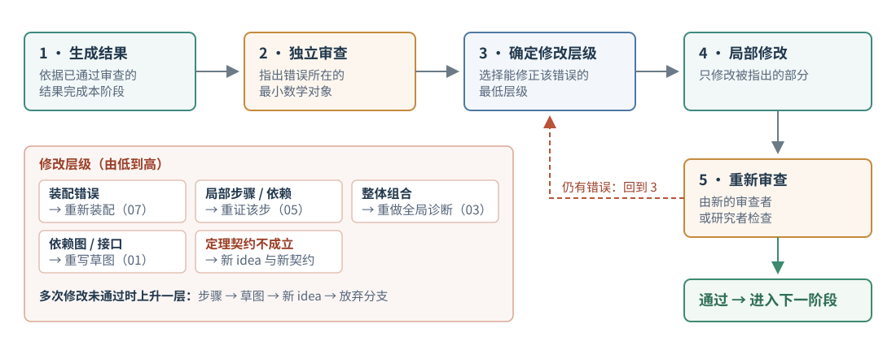

1. 背景
1.1 研究问题与动机
机器学习理论研究与数学研究相似：用数学语言描述算法、模型或学习任务，再给出严格的证明。但一个机器学习理论问题不只是一个证明，它通常由三部分组成：设定（数据模型、算法可获得的信息、损失与度量、参数范围）、目标（上界或下界，以及是否紧）和证明机制（分析工具与引理链）。概括起来就是：
在［假设］下，对［任务］上的［模型］，［保证］是什么（上界或下界），它是否紧？
对开放问题而言，这三部分通常都尚未确定。研究者一般按"文献调研 → 选择路线 → 提出想法 → 陈述定理 → 完成证明"的顺序推进 [13, 20]，其中有三个主要困难：
- 进展缓慢且串行。一个问题往往需要数周到数月，难以同时尝试多个方向。
- 问题发生漂移。原问题过难时，研究者常放宽设定，例如只考虑某类算法或增加一个条件；放宽之后，结论回答的可能已不是原来的问题 [18]。
- 证明难以检查。证明步骤被压缩，假设分散在正文和附录中，局部推导的错误、引理衔接的错误与目标本身的错误交织在一起。
随着语言模型数学能力的提高，这些环节有望由 agent 完成 [11, 14]。但若直接让模型针对开放问题写出证明，后两个困难会更加突出：模型可以迅速写出很长的证明，却未必说明修改了哪些条件；证明失败时，也难以判断应当修正一步推导、整条证明路线，还是问题本身。因此我们关心的问题是：
当研究目标、数学设定和证明路线需要共同演化时，agent 如何推进研究，并使每个结果都能与来源问题准确对应？
VALG（Zhang et al., 2026）围绕四个原则设计，分别对应上述困难：
- 并行探索（困难 1）：同一问题从至多三个不同角度同时推进。
- 先固定设定（困难 2）：证明开始前，将待证内容写成精确的定理陈述，证明过程中不得修改。
- 分层检查（困难 3）：证明路线能否到达目标，与每一步推导是否成立，由不同的审查分别检查。
- 显式记录放宽（困难 2）：失败被定位到具体层级；放宽设定必须写成新的定理陈述，并记录新增的条件。
VALG 的名称概括了这些组成部分：多层验证（Verification）、问题表述的自适应调整（Adaptive formulation）、学习理论问题（Learning-theory problems）以及图结构的证明开发（Graph-structured proof development）。
第 2 节介绍方法，包括核心概念、形成定理陈述的工作流一、分阶段证明的工作流二、最终审查，以及证明失败后的修改。第 3 节报告 COLT 2026 开放问题上的结果，并通过三个例子说明各结论覆盖的范围与剩余的差距。第 4 节总结主要发现与局限。
VALG 先把研究问题写成证明期间不可修改的精确定理陈述，再分层证明和审查；证明失败时，只能通过增加条件并记录差距的方式放宽问题。


1.2 示例问题
下文以 COLT 2026 的张量分解开放问题（记为 P1，Arvanitakis et al., 2026）为贯穿全文的例子，说明 VALG 每一步的具体内容。
目标张量 T 是 r 个秩一张量之和，每个因子由确定性向量加上小的高斯扰动得到（平滑张量模型）。算法用 k 个分量做最小二乘拟合，k > r 即过参数化。交替最小二乘（ALS）、梯度下降（GD）等迭代算法从随机初始化出发。原问题是：k 至少多大，这些算法才能以高概率收敛到全局最优？该问题被分为两个子问题：
上界：是否存在某个迭代算法，在 r < k = o(r2) 时于多项式时间内以高概率给出误差不超过 ε‖T‖F 的分解？
下界：是否存在普适常数 c > 0，使得当 r < k ≤ r1+c 时，ALS、GD 或其他迭代算法以常数概率收敛到严格为正的损失，即过参数化不足时无法拟合？
- 设定：平滑张量模型、高斯初始化、一般的迭代算法类，以及 k、r、维数 n 的范围。
- 目标：刻画收敛到全局最优所需的过参数化程度。下文主要讨论下界子问题。
- 证明机制：需要控制整条迭代轨迹。一般算法的更新可以离开初始化张成的子空间，这是主要难点。
- 后文用途：2.2 节给出它的定理契约，2.3 节给出证明的依赖图，2.5 节分析主要障碍所在的层级，3.3 节给出结论与剩余差距。
2. 方法
本节先定义核心概念（2.1），再依次介绍工作流一如何把研究方向变为定理契约（2.2）、工作流二如何分阶段完成证明（2.3）、最终审查（2.4），以及证明失败后的分层修改（2.5）。
VALG 把研究判断与证明检查放在不同阶段：前者决定研究什么问题，可以由研究者参与；后者在固定的设定下判断结论是否成立，由独立于证明者的审查模型完成。证明先写成依赖图 [12]，路线通过审查后才逐步展开，每一步单独审查。
2.1 核心概念
同一个开放问题可以从不同角度切入。以张量 ALS 为例，可以从算法类、初始化方式或参数范围入手。VALG 用两层结构组织这种探索：上层是研究角度，下层是在该角度下提出的具体数学方案。
- 视角
- perspective，一个研究角度，由研究目标、模型类、数据假设、参数范围和算法共同刻画。每个问题至多探索三个视角，彼此并行。
- idea
- 某一视角下的具体方案，包括预期的数学机制与目标结论。idea 只能使视角更具体，不能使其更宽泛。
- 定理契约
- theorem contract，由 idea 形式化得到的精确数学问题，给定对象、假设、参数范围、量词和唯一的目标结论。证明过程中不得修改。
- 分支
- 一个视角及其下依次尝试的 idea。每个分支至多给出一个候选定理。

2.2 工作流一：从研究方向到定理契约
工作流一的输入是一个研究方向，以及从来源论文中提取的问题陈述（research brief），其中写明必须保留的设定和已知结果。工作流一包括四个阶段：
- 文献调研。整理相关设定、已有结果、已有证明方法和尚未解决的问题，并确认所找到的空白确实属于原研究方向。
- 视角选择。提出至多三个视角，每个视角都以文献中的具体空白为依据。视角之间必须不同，以免探索集中于同一种理解。
- idea 生成。在每个视角下提出具体方案，说明预期的数学机制及其文献或推导依据。缺乏依据或与其他分支重复的 idea 被排除。
- 形式化。把可行的 idea 写成定理契约。
前三个阶段需要研究判断：一个空白是否重要，一个视角是否值得投入，一个 idea 是否有意义。因此研究者可以在每个阶段之后审阅结果，予以批准、修改或要求重新生成（图 1 中的 ✓）；也可以让系统自动通过这些环节，此时来源范围和分支约束保持不变。只有写成定理契约的 idea 才进入证明阶段。
在 P1 下界子问题中，视角 1 的分支不处理一般的 ALS，而研究受约束的 ALS 和梯度下降（cALS、cGD）：第一个因子矩阵始终保持在初始化张成的子空间内。其定理契约规定：
- 维数：n ≥ 8r5/4。
- 过参数化范围：r < k ≤ r5/4，即来源问题中的 c = 1/4。
- 模型：基向量任意，结论对其一致成立；高斯平滑；两种算法共用同一目标张量，初始化相互独立。
- 算法：给定的最小范数 ALS 更新与 Armijo 步长的梯度更新。
- 目标：以至少 1/4 的概率，两种算法的极限损失严格为正。
- 与来源问题的差别：算法类被收窄，并增加了维数条件。
契约一旦确定，证明者就不能为了完成证明而改动它，例如把 k ≤ r5/4 缩小为 k ≤ r1.1，或把维数条件加强为 n ≥ r2。若证明确实需要这样的改动，就回到工作流一，在同一分支下提出新的 idea 和新的契约，并记录它与原问题的差别（2.5 节）。
2.3 工作流二：先检查证明路线，再逐步完成证明
VALG 最初一次性生成完整证明。这样的证明把整体结构、局部推导和最终表述混在一起，过于紧凑，难以审查：出错时无法区分是某一步计算有误、某个引理推不出后续结论，还是目标本身选择不当。因此工作流二把证明分为 10 个阶段（图 1）：
| 阶段 | 内容 | 未通过时返回 |
|---|---|---|
| 01 证明草图 | 写出依赖图：源节点为假设，中间节点为引理，终点为目标定理 | — |
| 02 草图审查 | 检查路线是否覆盖目标、依赖关系是否合理 | 草图 / idea |
| 03 全局诊断 | 不写完整证明，逐个分析困难节点能否组合成完整论证 | — |
| 04 全局审查 | 判断整条定理是否可行，并指出障碍所在 | 全局诊断 / 草图 / idea |
| 05 步骤证明 | 按依赖顺序证明各节点 S1, …, Sm | — |
| 06 步骤审查 | 对每个节点分别进行独立审查 | 步骤 / 依赖 / 草图 |
| 07 证明装配 | 将通过审查的步骤连接成完整的 LaTeX 证明 | — |
| 08 分项终审 | 从结构、严谨性、引用和反例四个方面分别审查（2.4 节） | — |
| 09 汇总终审 | 综合四份审查意见，给出结论；若不通过，指出需要修改的最低层级 | 装配 / 步骤 / 草图 / idea |
| 10 接受 | 评分不低于 7 且没有未解决的问题时，接受该候选定理 | — |
草图明确依赖关系。依赖图的每个节点都写明精确的结论、可用的假设、所依赖的节点、计划使用的方法，以及交给后续节点的结论形式。写明这些接口，是为了检查节点之间是否真正衔接。例如，后续节点需要对所有参数一致成立的高概率界，而前一节点只给出固定参数下的期望界：两者在文字上都与问题相关，但并不衔接。
全局诊断检查各部分能否组合。依赖图在结构上完整，并不保证每个节点都能由其输入推出，也不保证其结论具有后续节点所需的形式和强度。例如，引理控制的是近似对象，而目标要求控制原对象；又如，每个固定时刻都有界，但尚未证明整条轨迹收敛。全局诊断逐个检查：节点依赖什么机制或已有结果，参数、概率与收敛方式是否一致，递归、极限和边界情形是否闭合。这些问题在写出完整证明之前就得到回答。
步骤证明只证明指定的结论。证明某一节点时，只能使用该节点允许的假设和已通过审查的前序结论；如需额外的局部引理，必须先陈述并证明。证明者不能暗中加强假设，也不能削弱节点要求的结论。所有节点通过审查后，装配阶段统一记号、连接论证，并确认各局部结论合起来恰好推出契约中的目标。
根据论文对 cALS/cGD 下界定理证明的描述，其依赖图包含四个中间节点。记 F = ½‖T − 算法表示的张量‖F2。
- 子空间不变：由于第一个因子受约束，算法在每一步表示的张量都属于固定子空间 SM ⊗ ℝn ⊗ ℝn。
- 正交残差：维数条件给出 k/n ≤ 1/8，由此以至少 1/4 的概率，目标张量在该子空间之外的部分满足 ‖(I − P)T‖F2 ≥ (3/4)‖T‖F2。
- 损失下界：由 1 和 2，对所有 t ≥ 0，F(t) ≥ (3/8)‖T‖F2。
- 收敛：给定的下降规则保证 F(t) 收敛到有限极限，因此极限不小于 (3/8)‖T‖F2，即为目标。
节点之间需要检查的接口包括：节点 2 中的事件必须对两种算法同时成立，并对任意基向量一致成立；节点 3 要求节点 1 对每个 t 成立，而不仅在极限处成立。
2.4 最终审查
装配阶段第一次要求所有局部结论共同推出整条定理，因此最终审查由四个审查模型分别从不同方面进行：
| 审查方面 | 检查内容 |
|---|---|
| 结构 | 目标定理、依赖图与最终证明是否一一对应，依赖关系是否完整 |
| 严谨性 | 量词、假设、推导、概率论证和边界条件是否正确 |
| 引用 | 所引定理是否存在，其条件是否足以支持当前的使用 |
| 反例 | 是否存在未处理的边界情形或反例 |
汇总审查综合四份意见给出最终结论。评分不低于 7 分且没有未解决的问题时，该候选定理被接受，这个评分不同于 3.1 节的进展分。若不通过，汇总审查指出需要修改的最低层级，即装配、某个步骤、草图或 idea。
2.5 分层修改
证明失败时，VALG 要求审查指出错误所在的最小数学对象，并据此选择能够修正该错误的最低层级。被选中的阶段只能使用此前已通过审查的结果、失败的证明和审查意见，并且只修改被指出的部分；修改后的结果须经新的审查者或研究者检查通过，才能进入下一阶段（图 3）。

错误按所在层级分为四类：
| 层级 | 例子 | 修改方式 |
|---|---|---|
| 装配 | 记号不一致、衔接缺失，或装配时引入了未经证明的推导 | 重新装配（07） |
| 局部推导 | 不等式方向错误，或引用定理时缺少前提 | 重新证明相应步骤或其依赖（05） |
| 证明结构 | 引理成立，但其结论不足以支持目标；递归论证没有闭合 | 组合问题重新做全局诊断（03）；依赖图或接口问题重新写草图（01） |
| 定理契约 | 在当前设定下，目标无法按计划成立 | 回到工作流一，在同一分支下提出新的 idea 和契约，并记录与原问题的差别 |
分层修改使局部计算错误不必牵动整张依赖图，而依赖图的接口错误也不会被当作某一步推导的问题反复修改。只有契约层的问题才允许放宽设定，且须记录差距。同一层级多次修改仍未通过时，问题上升到更高一层，顺序为：局部步骤、证明草图、新的 idea，最后放弃该分支。
论文指出了 P1 下界中一般 ALS 的主要障碍：不受约束的更新可以离开初始化子空间，证明因而失去用来阻止精确拟合的固定子空间，无法控制整条迭代轨迹。这一障碍属于契约层，无法通过修改某一步推导来解决。2.2 节的 cALS/cGD 契约正是通过收窄算法类绕开了这一障碍，并在契约中写明了算法范围的变化。
3. COLT 2026 开放问题上的结果
本节先介绍实验设置与评分方法（3.1），再给出各子问题的结果（3.2），最后通过三个例子说明各结论覆盖的范围与剩余的差距（3.3）。
9 个子问题中，2 个得到完整解决，7 个得到部分解决；25 个分支中有 22 个给出了通过终审的候选定理。4 个满分分支都由第 1 个 idea 完成；但由第 1 个 idea 完成的 8 个分支中，另外 4 个的进展分为 5.25–7.00。
3.1 实验设置与评分
我们从 5 篇 COLT 2026 开放问题论文中选取 9 个子问题：张量 ALS 的上界与下界（P1，Arvanitakis et al., 2026），非自适应 1-bit 均值估计（P2，Lau & Scarlett, 2026a），深度学习与线性模型对比中的 SGD 与 SQ 子问题（P3，Feldman et al., 2026），差分隐私 PAC 学习的样本复杂度与类的存在性（P4，Nissim et al., 2026），以及分段 Lipschitz 函数在线优化中的多项式边界与 Pfaffian 边界（P5，Balcan et al., 2026）。
每个子问题以从原文提取的问题陈述为输入，独立运行一次 VALG，所有阶段均使用 GPT-5.6-sol 并采用最高推理强度。7 个子问题探索了三个视角，P1 上界与 P5 多项式边界各探索了两个，共 25 个分支。通过终审的候选定理均经过多方面的模型审查和作者的人工核查，尚未经过来源问题作者的审阅或形式化验证。
在每个视角下，idea 按固定顺序生成：首先提出忠于原问题、以完整解决为目标的 idea；只有在这样的 idea 不可行时，才提出放宽设定、以部分进展为目标的 idea。此后，只有当 idea 层级的审查未通过，或较低层级多次修改仍未通过时，才会提出新的 idea。因此，一个分支尝试的 idea 数反映了它在 idea 层级失败的次数。
每个候选定理从三个方面分别评分，以区分"证明是否可靠""解决了多少来源问题"和"方法是否新颖"：
| 指标 | 定义 |
|---|---|
| 进展 P ∈ [0, 10] | 由独立的评审模型对照来源子问题评定，P = min{C + B + H, 上限}。C ∈ [0, 4] 衡量原目标的完成程度，B ∈ [0, 3] 衡量相对原论文已有结果的改进，H ∈ [0, 3] 衡量核心难点被解决的程度。P = 10 表示恰好覆盖原目标。 |
| 进展上限 | 候选与原问题存在根本偏差时适用：假设了原问题尚未解决的核心性质，则 P ≤ 3；只证明了刻画的一个方向，或遗漏了核心量词、参数范围或速率，则 P ≤ 7。 |
| 数学可靠性 | 取候选本身的正确性、关键依赖的核查程度和审查的完整性三者中的最小值。 |
| 技术新颖性 | 新机制相对已有工作的原创性及其在证明中的作用。 |
同一子问题内的分支按 0.4 × 进展 + 0.4 × 可靠性 + 0.2 × 新颖性排序，因此进展分较高的分支未必排名靠前。
3.2 各子问题的结果
25 个分支中，22 个给出了通过终审的候选定理；2 个达到 idea 次数上限而未得到结果（P1 上界的视角 2 尝试了 14 个 idea，P4 类的存在性的视角 3 尝试了 6 个），1 个被人工中止。22 个分支的耗时合计 578 小时，单个分支 8–91 小时；同一子问题的各分支并行运行。
P2 的非自适应 1-bit 均值估计（3.3 节例一）和 P5 的 Pfaffian 在线优化得到完整解决，两者都有两个分支独立达到 10 分。P5 的结果在论文给定的归一化下成立；任意 Pfaffian 表示能否化为这一归一化，仍是一个开放问题。
满分的 4 个分支都由第 1 个 idea 完成，这与 idea 的生成顺序一致，因为第 1 个 idea 总以完整解决原问题为目标。但由第 1 个 idea 完成的 8 个分支中，另外 4 个的进展分只有 5.25–7.00。尝试更多 idea 的分支也可能得分更高，例如在 P4 样本复杂度中，尝试 4 个 idea 的分支（6.25）高于只尝试 1 个 idea 的分支（5.25）。论文据此认为，较难的问题往往需要多个视角和不断调整的 idea。
进展与可靠性之间也存在取舍。在 P1 下界中，视角 2 和视角 3 的进展分为 3.00，但其结论都以一个尚未证明的轨迹条件为前提；视角 1 的进展分为 2.25，却是三者中唯一不依赖此类条件的结果，因而排名高于视角 3。这也是我们选择它作为贯穿示例的原因。
论文 Table 1：25 个分支的完整结果
| 问题 | 子问题 | 视角 | idea 数 | 结果 | 小时 | 进展 | 排名 |
|---|---|---|---|---|---|---|---|
| P1 张量 ALS | 上界 | 1 | 7 | 第 7 个 idea 通过 | 76 | 6.50 | 1 |
| P1 张量 ALS | 上界 | 2 | 14 | 达到次数上限 | – | 0.00 | 2 |
| P1 张量 ALS | 下界 | 1 | 2 | 第 2 个 idea 通过 | 8 | 2.25 | 2 |
| P1 张量 ALS | 下界 | 2 | 2 | 第 2 个 idea 通过 | 11 | 3.00 | 1 |
| P1 张量 ALS | 下界 | 3 | 3 | 第 3 个 idea 通过 | 38 | 3.00 | 3 |
| P2 1-bit 均值估计 | 非自适应 | 1 | 1 | 第 1 个 idea 通过 | 13 | 10.00 | 2 |
| P2 1-bit 均值估计 | 非自适应 | 2 | 2 | 人工中止 | – | 0.00 | 3 |
| P2 1-bit 均值估计 | 非自适应 | 3 | 1 | 第 1 个 idea 通过 | 9 | 10.00 | 1 |
| P3 深度 vs. 线性学习 | SGD | 1 | 3 | 第 3 个 idea 通过 | 12 | 2.75 | 2 |
| P3 深度 vs. 线性学习 | SGD | 2 | 2 | 第 2 个 idea 通过 | 10 | 2.25 | 3 |
| P3 深度 vs. 线性学习 | SGD | 3 | 2 | 第 2 个 idea 通过 | 12 | 5.25 | 1 |
| P3 深度 vs. 线性学习 | SQ | 1 | 3 | 第 3 个 idea 通过 | 15 | 2.75 | 2 |
| P3 深度 vs. 线性学习 | SQ | 2 | 2 | 第 2 个 idea 通过 | 8 | 3.00 | 1 |
| P3 深度 vs. 线性学习 | SQ | 3 | 2 | 第 2 个 idea 通过 | 9 | 2.25 | 3 |
| P4 隐私 PAC 学习 | 样本复杂度 | 1 | 3 | 第 3 个 idea 通过 | 48 | 6.50 | 1 |
| P4 隐私 PAC 学习 | 样本复杂度 | 2 | 4 | 第 4 个 idea 通过 | 91 | 6.25 | 2 |
| P4 隐私 PAC 学习 | 样本复杂度 | 3 | 1 | 第 1 个 idea 通过 | 28 | 5.25 | 3 |
| P4 隐私 PAC 学习 | 类的存在性 | 1 | 5 | 第 5 个 idea 通过 | 28 | 3.00 | 2 |
| P4 隐私 PAC 学习 | 类的存在性 | 2 | 2 | 第 2 个 idea 通过 | 25 | 5.50 | 1 |
| P4 隐私 PAC 学习 | 类的存在性 | 3 | 6 | 达到次数上限 | – | 0.00 | 3 |
| P5 在线优化 | 多项式边界 | 1 | 1 | 第 1 个 idea 通过 | 12 | 5.75 | 2 |
| P5 在线优化 | 多项式边界 | 2 | 1 | 第 1 个 idea 通过 | 24 | 7.00 | 1 |
| P5 在线优化 | Pfaffian 边界 | 1 | 1 | 第 1 个 idea 通过 | 30 | 10.00 | 1 |
| P5 在线优化 | Pfaffian 边界 | 2 | 1 | 第 1 个 idea 通过 | 40 | 10.00 | 2 |
| P5 在线优化 | Pfaffian 边界 | 3 | 1 | 第 1 个 idea 通过 | 31 | 6.75 | 3 |
"第 j 个 idea 通过"表示该分支的第 j 个 idea 通过终审；"达到次数上限"表示尝试的 idea 数达到上限仍未通过；"–"表示无耗时记录。排名在同一子问题内按 0.4 × 进展 + 0.4 × 可靠性 + 0.2 × 新颖性计算。
3.3 三个例子
下面先介绍一个完整解决的例子，再介绍两个部分解决的例子：一个收窄了算法类，另一个收窄了网络结构、目标类和精度要求。每个例子都说明三点：在什么条件下，证明了什么，与原问题还差什么。
例一：非自适应 1-bit 均值估计（完整解决）
P2 由 Lau 和 Scarlett（2026a）提出。考虑一维均值估计：分布 D 的均值位于 [−λ, λ]，k 阶中心矩不超过 σk（k > 1，λ ≥ σ > 0 已知）。每个样本 Xt 只能传出 1 bit，即 Yt = 1{Xt ∈ At}。若允许自适应，即 At 可依赖此前收到的 bit，则达到精度 ε、置信度 1 − δ 的最优样本数已知，记为 rk(λ, σ, ε, δ)：
rk = log(λ/σ) + { (σ/ε)2 log(1/δ)，k > 2； (σ/ε)2 log(σ/ε) log(1/δ)，k = 2； (σ/ε)k/(k−1) log(1/δ)，1 < k < 2 }
开放问题是：完全非自适应的协议（所有 At 在收到任何 bit 之前即已确定）能否达到同样的阶，即用 n ≤ Ck · rk 个样本使 supD P(|μ̂ − μ(D)| > ε) ≤ δ？
结论。候选定理（论文 Theorem 4.5，视角 1；视角 3 的 Theorem 4.6 独立得到相同结论）给出肯定回答：对所有 λ ≥ σ > 0、0 < ε ≤ ckσ 和 δ ∈ (0, 1/2)，存在完全非自适应的 1-bit 协议，所用样本数 n ≤ Ck · rk，常数只依赖于 k。结合已知的 1-bit 下界，该速率在阶上最优。
机制。样本事先分为两组，所有查询在通信开始前确定。定位组采用 Lau 和 Scarlett（2026b）的非自适应构造，得到与真实均值相差 O(σ) 的粗略中心 c。细化组在一组二进尺度上进行带随机偏移的量化查询，这些尺度与偏移同样事先抽取。关键在于，定位结果只在解码时使用：收到全部 bit 后，解码器根据 c 选择重构方式，对细化组的 bit 加权组合，再以分组中位数作为估计。因此查询本身始终是非自适应的。
例二：张量 ALS 下界，收窄算法类（部分解决）
这是 P1 下界子问题中视角 1 的分支（进展 2.25），即 2.2 节契约和 2.3 节依赖图所对应的分支。
- 一般的 ALS、梯度下降等迭代算法，更新可以离开初始化子空间
- 不附加维数条件
- 存在 c > 0，使 r < k ≤ r1+c 时极限损失严格为正
- 受约束的 cALS / cGD：第一个因子保持在初始化子空间内
- 给定的最小范数 ALS 与 Armijo 梯度更新
- n ≥ 8r5/4，r < k ≤ r5/4（即 c = 1/4）
结论。候选定理（论文 Theorem 4.2）表明：以至少 1/4 的概率（关于平滑与两组初始化），cALS 与 cGD 的损失 FM(t) = ½‖T − 算法表示的张量‖F2 对所有 t ≥ 0 不小于 (3/8)‖T‖F2，且极限存在并满足
limt→∞ FM(t) ≥ (3/8)‖T‖F2， M ∈ {cALS, cGD}。
证明沿 2.3 节的依赖图展开：约束使算法能表示的张量始终属于一个固定子空间，而目标张量以常数概率有相当一部分位于该子空间之外，这一部分无法拟合，损失因而不能降到零。
差距。原问题允许因子离开初始化子空间的一般更新，而该结论只适用于受约束的算法，没有给出一般 ALS 或任意迭代算法的下界。要回到原问题，需要在相同的平滑模型、维数条件和秩范围下，对不受约束的最小范数 ALS 和全变量 Armijo 梯度下降证明同样的结论，并去掉维数条件 n ≥ 8r5/4 或说明其必要性。
例三：ReLU 网络与 SGD，收窄网络、目标类与精度（部分解决）
P3 由 Feldman 等（2026）提出，这里讨论 SGD 子问题中视角 3 的分支（进展 5.25，子问题内排名第一）。函数类 H 的维数复杂度 dc(H) 定义为最小的 d，使得存在特征映射 φ: X → ℝd，令 H 中每个函数都可写为 h(x) = sign(⟨wh, φ(x)⟩)。问题是：若参数总数为 S 的全连接 ReLU 网络经 T 步 SGD 能对所有输入分布和所有目标函数把 H 学到期望误差 ε 以内，是否必有 dc(H) ≤ C·TS？换言之，SGD 训练的网络能学会的问题，是否也能由规模不大的线性模型学会。
- 一般的全连接 ReLU 网络（可有偏置、任意深度）
- 任意函数类 H ⊆ {±1}X，X = {±1}n
- 精度 ε < 1/4
- 无偏置的两层 ReLU 网络，两层均参与训练
- 每个目标函数满足 h(−x) = −h(x)
- 高精度：2ε < 1/(n+1)；规定 ReLU 在零点的导数
结论。若这样的网络经 T 步 SGD 对所有分布和目标都达到精度 ε，候选定理（论文 Theorem 4.7）证明恒等特征 φ(x) = x 即可线性表示 H 中的每个函数。由于网络参数数 S = m(n+1) ≥ n，有
dc(H) ≤ n ≤ S ≤ TS。
三个条件对应三个障碍。论文指出，原设定下有三个障碍：一般深层 ReLU 网络输出的反对称部分可能是非线性的；任意目标可能给 x 与 −x 分配不相容的标签；ε < 1/4 过弱，不足以使有限反例与学习保证产生矛盾。无偏置两层网络满足 σ(z) − σ(−z) = z，使反对称部分成为线性函数；目标的反对称性使 x 与 −x 的标签一致；2ε < 1/(n+1) 提供了严格的误差间隔。三个条件恰好分别消除了三个障碍，因此该结论更接近一个结构性的特例，这与其 5.25 的进展分一致。
差距。要回到原问题，需要在去掉这三个条件后得到 O(TS) 的维数复杂度上界，即为一般网络、任意目标类和更宽的精度范围构造共同的线性特征表示。
例一表明 VALG 能够在原问题的全部范围内给出证明。例二和例三表明，附加条件使证明成为可能，同时也缩小了结论的适用范围；VALG 同时记录这两方面，使读者能够判断一个定理回答的是原问题、受限版本，还是有待推广的结果。
4. 结论与展望
VALG 给出的不只是一组定理，还包括每个结论的设定、证明、审查记录及其相对来源问题的位置。对于部分解决的 7 个子问题，这些记录指明了新增的条件和剩余的差距，也就指明了下一步的研究方向。
4.1 主要发现
方法上，把研究判断与证明检查分到不同阶段是可行的：契约确定后，证明可以写成依赖图，证明路线、整体组合与局部推导分别由不同的审查检查；错误按层级修改，放宽设定只能以新契约的形式出现，并记录差距。
结果上，在 5 篇 COLT 2026 开放问题论文的 9 个子问题中，25 个分支有 22 个给出通过终审的候选定理；2 个子问题得到完整解决，7 个得到部分解决。满分分支都由第 1 个 idea 完成，而较难的子问题需要多个视角和多轮 idea 才取得部分进展。
关于 agent 结构的作用，我们认为，对于定义清楚的问题，当前最强的模型往往不需要复杂的多轮结构：在 MLtheorybench 中，GPT-6 在研究级证明任务上的基本完成率达到 84.7%。VALG 多阶段结构的主要价值在于问题尚未定型时组织探索、定位错误，并记录每个结果的适用范围。此外，少数几个开放问题不足以系统衡量模型的研究能力 [19]，这也是我们构建 MLtheorybench 的原因之一。
4.2 局限与后续工作
第一，案例数量有限。评估各组成部分的作用和结果的可重复性，需要已知答案、允许多种有效表述，并清楚记录假设与证明依赖的对照基准。
第二，验证仍需加强。候选定理需要领域专家，尤其是来源开放问题的作者进一步审阅。实验中证明与审查使用同一基础模型。机器学习理论涉及概率、优化、统计和信息论，现有通用形式化工具在这些领域尚不完善，需要针对机器学习理论中常见的陈述与证明模式开发专门的自动形式化工具 [15, 16, 17]。
第三，人工检查成本较高。生成的证明篇幅较长，我们计划以依赖图和定理契约作为人工检查的入口，降低专家审阅的成本。
论文给出了各子问题代表性分支的定理，代码仓库提供了完整证明。
参考文献
- Zhang, D., Tang, X., Yin, X., Chen, X., Qian, J., & Zou, D. (2026). VALG: An Agentic System for ML Theory Research and Demonstrations on COLT 2026 Open Problems. arXiv:2608.13060.
- VALG 代码、工作流与 COLT 2026 案例记录. GitHub: DechenZhang/VALG-ML-Theory-Agent（case-studies/colt-2026）.
- Arvanitakis, D., Srinivas, V., & Vijayaraghavan, A. (2026). Open problem: How much overparametrization is needed for ALS in tensor decomposition? COLT 2026, PMLR 336.（P1）
- Lau, I., & Scarlett, J. (2026a). Open problem: Is interaction necessary for order-optimal 1-bit mean estimation? COLT 2026, PMLR 336.（P2）
- Lau, I., & Scarlett, J. (2026b). Order-optimal sequential 1-bit mean estimation in general tail regimes. arXiv:2604.07796.
- Feldman, V., Kamath, P., & Srebro, N. (2026). Invited open problem: Is the power of deep learning over linear models inherently distribution dependent? COLT 2026, PMLR 336.（P3）
- Nissim, K., Stemmer, U., & Tsfadia, E. (2026). Invited open problem: Does differential privacy make PAC learning much harder? COLT 2026, PMLR 336.（P4）
- Balcan, M.-F., Pegden, W., & Sharma, D. (2026). Invited open problem: Online optimization of piecewise-Lipschitz functions with applications to data-driven algorithm design. COLT 2026, PMLR 336.（P5）
- Zou, D. (2026, Oct 17). LLM for ML Theory at Scale: The VALG Agent and OpenTheoryBench. X-AGI 2026 演讲幻灯片.
- Zhou, S., Zhang, D., & Zou, D. (2026). MLtheorybench：机器学习理论证明评测. Blog.
- Feng, T., Trinh, T. H., Bingham, G., et al. (2026). Towards Autonomous Mathematics Research. arXiv:2602.10177.
- Liu, J., Gao, G., Sun, Z., et al. (2026). Danus: Orchestrating Mathematical Reasoning Agents with Fact-Graph Memory. arXiv:2607.06447.
- He, Y., Li, D., Li, G., et al. (2026). ReasFlow: Assisting Reasoning-Centric Scientific Discovery in Applied Mathematics via a Knowledge-Based Multi-Agent System. arXiv:2607.14178.
- Zheng, D., von Glehn, I., Zwols, Y., et al. (2026). AI co-mathematician: Accelerating mathematicians with agentic AI. arXiv:2605.06651.
- Yang, K., Swope, A. M., Gu, A., et al. (2023). LeanDojo: Theorem Proving with Retrieval-Augmented Language Models. arXiv:2306.15626.
- Zhang, Y., Lee, J. D., & Liu, F. (2026). AI4SLT: Empirical Processes in Lean 4 for Formal Statistical Learning Theory. arXiv:2602.02285.
- Zhang, Y., Sun, Y., Suzuki, T., Lee, J. D., & Liu, F. (2026). LeanMarathon: Toward Reliable AI Co-Mathematicians through Long-Horizon Lean Autoformalization. arXiv:2606.05400.
- Son, G., Yi, S., Gwak, M., Ko, H., Jang, W., & Yu, Y. (2026). ResearchMath-14K: Scaling Research-Level Mathematics via Agents. arXiv:2605.28003.
- Huang, Q., Vora, J., Liang, P., & Leskovec, J. (2023). MLAgentBench: Evaluating Language Agents on Machine Learning Experimentation. arXiv:2310.03302.
- Lu, C., Lu, C., Lange, R. T., Foerster, J., Clune, J., & Ha, D. (2024). The AI Scientist: Towards Fully Automated Open-Ended Scientific Discovery. arXiv:2408.06292.